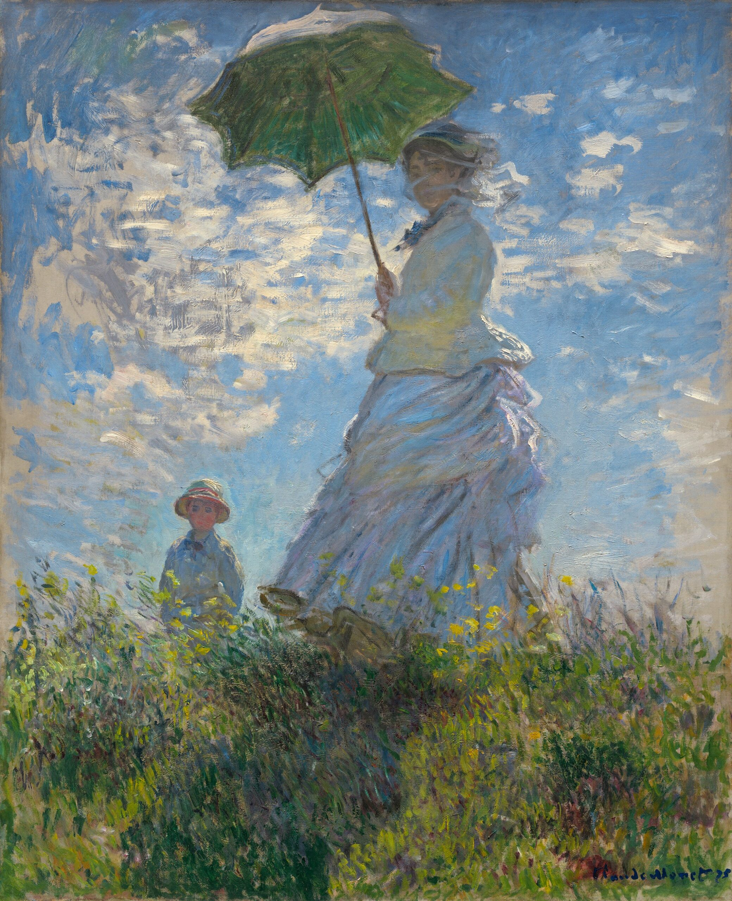

このサイトについて
初めて書いたWebページです。
HTMLやCSSを用いたWebページ制作を学習しており、このサイトは授業課題として作成しました。
🐾 最近の出来事
2026.05.31
初めてサブウェイに行きました。BLTサンドが美味しかったです。
初めて書いたWebページです。
HTMLやCSSを用いたWebページ制作を学習しており、このサイトは授業課題として作成しました。
2026.05.31
初めてサブウェイに行きました。BLTサンドが美味しかったです。
| 資格・免許 | 普通自動車第一種運転免許 など |
|---|

2026.06.02 模写制作
初めて絵画の模写をしました。クレパスで描いたので色を上から重ねるのが難しく、奥行きの表現がイマイチになりました。次の作品に生かしたいと思います。

2026.05.15 制作
色使いを意識して模写しました。特に背景のグラデーションにこだわって丁寧に仕上げました。
| 2026年 | 高校卒業 |
|---|
📢 最新のポストはX（旧Twitter）でチェック！
syuryiのXを見る